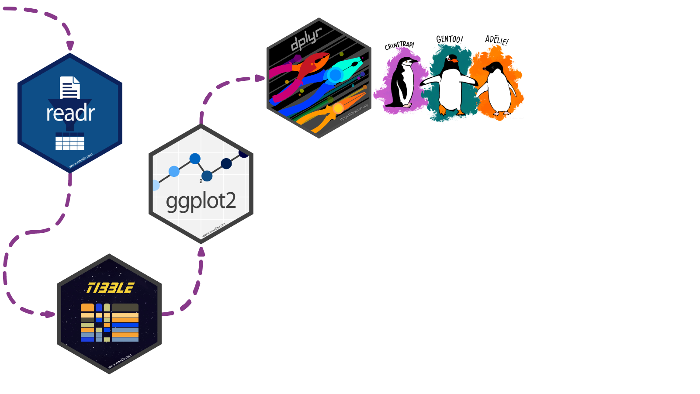

# A tibble: 344 × 3
species sex body_mass_g
<fct> <fct> <int>
1 Adelie male 3750
2 Adelie female 3800
3 Adelie female 3250
4 Adelie <NA> NA
5 Adelie female 3450
6 Adelie male 3650
7 Adelie female 3625
8 Adelie male 4675
9 Adelie <NA> 3475
10 Adelie <NA> 4250
# ℹ 334 more rows
Photo by James Eades on Unsplash
dplyr: info
Data transformation helps you get the data in exactly the right form you need
With dplyr you can:
- create new variables
- create summaries
- rename variables
- reorder observations
- …and more!
- Pick observations by their values with
filter(). - Reorder the rows with
arrange(). - Pick variables by their names
select(). - Create new variables with functions of existing variables with
mutate(). - Collapse many values down to a single summary with
summarize(). group_by()gets the above functions to operate group-by-group rather than on the entire dataset.- and
count()+add_count()simplifygroup_by()+summarize()when you just want to count

dplyr: exercise
Can you spot the difference in these operations?
# A tibble: 344 × 3
species sex body_mass_g
<fct> <fct> <int>
1 Adelie male 3750
2 Adelie female 3800
3 Adelie female 3250
4 Adelie <NA> NA
5 Adelie female 3450
6 Adelie male 3650
7 Adelie female 3625
8 Adelie male 4675
9 Adelie <NA> 3475
10 Adelie <NA> 4250
# ℹ 334 more rowsWe can use arrange() to arrange our data in descending order by body_mass_g
glimpse(penguins)
## Rows: 344
## Columns: 8
## $ species <fct> Adelie, Adelie, Adelie, Adelie, Adelie, Adelie, Adel…
## $ island <fct> Torgersen, Torgersen, Torgersen, Torgersen, Torgerse…
## $ bill_length_mm <dbl> 39.1, 39.5, 40.3, NA, 36.7, 39.3, 38.9, 39.2, 34.1, …
## $ bill_depth_mm <dbl> 18.7, 17.4, 18.0, NA, 19.3, 20.6, 17.8, 19.6, 18.1, …
## $ flipper_length_mm <int> 181, 186, 195, NA, 193, 190, 181, 195, 193, 190, 186…
## $ body_mass_g <int> 3750, 3800, 3250, NA, 3450, 3650, 3625, 4675, 3475, …
## $ sex <fct> male, female, female, NA, female, male, female, male…
## $ year <int> 2007, 2007, 2007, 2007, 2007, 2007, 2007, 2007, 2007…# A tibble: 344 × 3
species sex body_mass_g
<fct> <fct> <int>
1 Gentoo male 6300
2 Gentoo male 6050
3 Gentoo male 6000
4 Gentoo male 6000
5 Gentoo male 5950
6 Gentoo male 5950
7 Gentoo male 5850
8 Gentoo male 5850
9 Gentoo male 5850
10 Gentoo male 5800
# ℹ 334 more rowsWe can use group_by() to group our data by species and sex
We can use summarize() to calculate the average body_mass_g for each grouping
penguins |>
select(species, sex, body_mass_g) |>
group_by(species, sex) |>
summarize(mean = mean(body_mass_g))# A tibble: 8 × 3
# Groups: species [3]
species sex mean
<fct> <fct> <dbl>
1 Adelie female 3369.
2 Adelie male 4043.
3 Adelie <NA> NA
4 Chinstrap female 3527.
5 Chinstrap male 3939.
6 Gentoo female 4680.
7 Gentoo male 5485.
8 Gentoo <NA> NA If we’re just interested in counting the observations in each grouping, we can group and summarize with special functions count() and add_count().
Counting can be done with group_by() and summarize(), but it’s a little cumbersome.
It involves…
- using
mutate()to create an intermediate variable n_species that adds up all observations per species, and - an
ungroup()-ing step
penguins |>
group_by(species) |>
mutate(n_species = n()) |>
ungroup() |>
group_by(species, sex, n_species) |>
summarize(n = n())# A tibble: 8 × 4
# Groups: species, sex [8]
species sex n_species n
<fct> <fct> <int> <int>
1 Adelie female 152 73
2 Adelie male 152 73
3 Adelie <NA> 152 6
4 Chinstrap female 68 34
5 Chinstrap male 68 34
6 Gentoo female 124 58
7 Gentoo male 124 61
8 Gentoo <NA> 124 5If we’re just interested in counting the observations in each grouping, we can group and summarize with special functions count() and add_count().
In contrast, count() and add_count() offer a simplified approach
Example kindly contributed by Alison Hill
# A tibble: 8 × 4
species sex n n_species
<fct> <fct> <int> <int>
1 Adelie female 73 152
2 Adelie male 73 152
3 Adelie <NA> 6 152
4 Chinstrap female 34 68
5 Chinstrap male 34 68
6 Gentoo female 58 124
7 Gentoo male 61 124
8 Gentoo <NA> 5 124We can add to our counting example by using mutate() to create a new variable prop
prop represents the proportion of penguins of each sex, grouped by species
Example kindly contributed by Alison Hill
penguins |>
count(species, sex) |>
add_count(species, wt = n,
name = "n_species") |>
mutate(prop = n/n_species*100)# A tibble: 8 × 5
species sex n n_species prop
<fct> <fct> <int> <int> <dbl>
1 Adelie female 73 152 48.0
2 Adelie male 73 152 48.0
3 Adelie <NA> 6 152 3.95
4 Chinstrap female 34 68 50
5 Chinstrap male 34 68 50
6 Gentoo female 58 124 46.8
7 Gentoo male 61 124 49.2
8 Gentoo <NA> 5 124 4.03Finally, we can filter rows to only show us Chinstrap penguin summaries by adding filter() to our pipeline